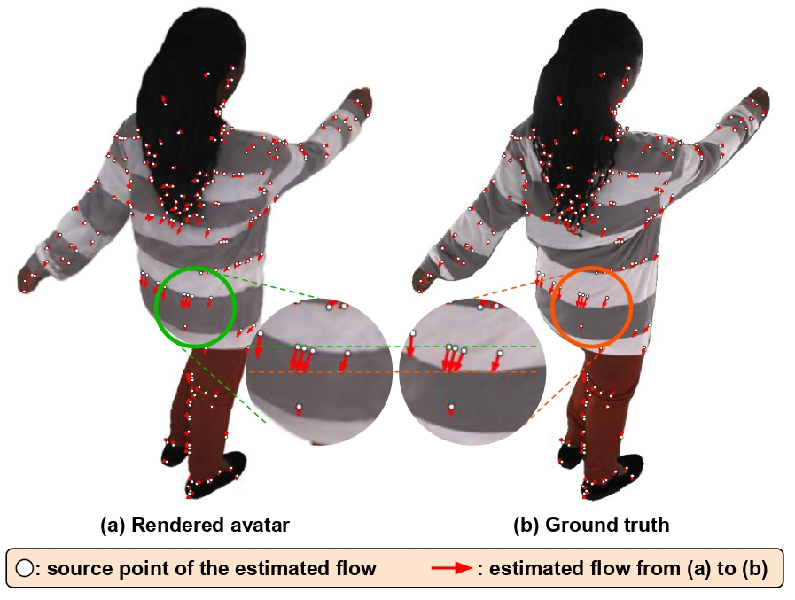

We present DynaAvatar, a zero-shot framework that reconstructs animatable 3D human avatars with motion-dependent cloth dynamics from a single image.
Trained on large-scale multi-person motion datasets, DynaAvatar employs a Transformer-based feed-forward architecture that directly predicts dynamic 3D Gaussian deformations without subject-specific optimization. To overcome the scarcity of dynamic captures, we introduce a static-to-dynamic knowledge transfer strategy: a Transformer pretrained on large-scale static captures provides strong geometric and appearance priors, which are efficiently adapted to motion-dependent deformations through lightweight LoRA fine-tuning on dynamic captures. We further propose the DynaFlow loss, an optical flow–guided objective that provides reliable motion-direction geometric cues for cloth dynamics in rendered space.
Finally, we reannotate the missing or noisy SMPL-X fittings in existing dynamic capture datasets, as most public dynamic capture datasets contain incomplete or unreliable fittings that are unsuitable for training high-quality 3D avatar reconstruction models.
We introduce dynamic Transformer that refines the static features for modeling motion-dependent cloth dynamics.
The proposed Dynamic Transformer enables the modeling of motion-dependent deformations, leading to superior animation quality.
We train a dynamic Transformer from scratch while fine-tuning the pretrained static Transformer using lightweight LoRA adapters.
This transfer-based adaptation allows DynaAvatar to effectively learn realistic cloth dynamics even with limited dynamic supervision, benefiting from knowledge distilled from large-scale static data.

We propose DynaFlow loss, which leverages optical flow to establish correspondences between the rendered and ground-truth images even when deformation exceeds the receptive field of conventional losses.
By injecting explicit pixel-displacement cues that tell each Gaussian how it should move, DynaFlow allows the model to recover both large-scale deformations and sharp, well-separated boundary details that standard image losses alone cannot supervise.
To address the missing or noisy original annotations, we reconstruct refined SMPL-X fittings for all frames using a unified reannotation pipeline.
Applying physics simulation to in-the-wild sequences often leads to catastrophic failures where the cloth unrealistically flies away or drifts. In contrast, DynaAvatar robustly synthesizes both motion-dependent cloth dynamics and high-fidelity appearance, even when driven by in-the-wild motion sequences.
DynaAvatar is free from diffusion-based methods' pose alignment constraints and robustly handles large global motions. This capability stems from our Dynamic Transformer, which effectively incorporates motion features via attention mechanisms without relying on explicit spatial alignment.
DynaAvatar outperforms prior single-image-based 3D animatable avatar methods. Qualitatively, DynaAvatar models motion-dependent cloth dynamics far more faithfully, even for in-the-wild examples.
@InProceedings{"""",
author = {Kwon, Joohyun and Sim, Geonhee and Moon, Gyeongsik},
title = {Zero-Shot Reconstruction of Animatable 3D Avatars with Cloth Dynamics from a Single Image},
booktitle = {Proceedings of the IEEE/CVF Conference on Computer Vision and Pattern Recognition (CVPR)},
month = {-},
year = {2026},
pages = {-}
}